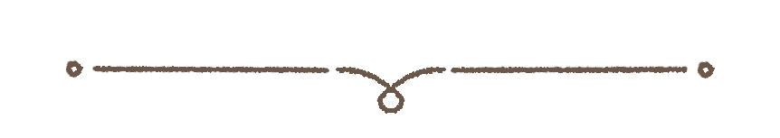
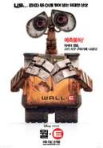
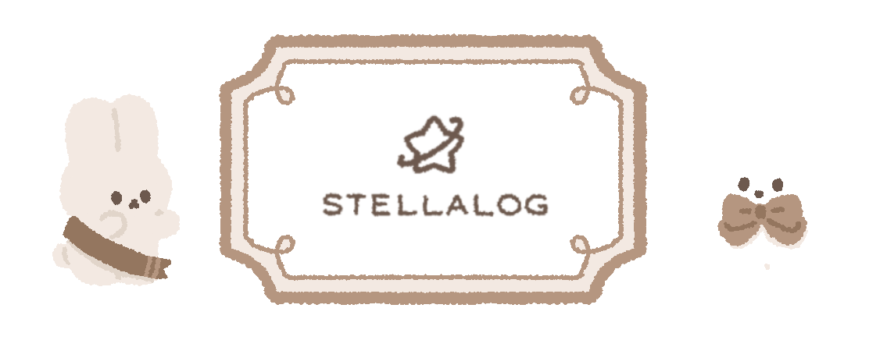

welcome !
웨디의 방에 오신 여러분들을 환영합니다.
크루분들을 초대한 저는...
우아한 테크코스 6기
후론트라라엔드 웨디(박세현)입니다.
후론트라라엔드 웨디(박세현)입니다.
about me !
이름은 별의 커비에 나오는 웨이들디에서 따왔습니다.
멍청하고 귀엽게 생겨서 좋아합니다 ☺️
그리고 평소에 "왜지????" 라고 자주 말해서 더 의미부여를 해봤습니다..
MBTI : ISFP 눕는거사랑함+평화추구+매일 "그럴 수 있지" 달고살아요
거주지: 신당역2호선 30분 타고감니다

멍청하고 귀엽게 생겨서 좋아합니다 ☺️
그리고 평소에 "왜지????" 라고 자주 말해서 더 의미부여를 해봤습니다..
MBTI : ISFP 눕는거사랑함+평화추구+매일 "그럴 수 있지" 달고살아요
거주지: 신당역2호선 30분 타고감니다
movies !
| 순위 | 제목 | 포스터 (클릭시 이동) |
줄거리 |
|---|---|---|---|
| 1 | 월-E |  | 텅 빈 지구에 홀로 남아 수백 년이란 시간을 외롭게 일만 하며 보내던 월-E (WALL-E: Waste Allocation Load Lifter Earth-Class, 지구 폐기물 수거-처리용 로봇). 그런 그가 매력적인 탐사 로봇 ‘이브’와 마주친 순간, 잡동사니 수집만이 낙이던 인생에도 소중한 목표가 생긴다. |
| 2 | 인터스텔라 |

|
세계 각국의 정부와 경제가 완전히 붕괴된 미래가 다가온다. 지난 20세기에 범한 잘못이 전 세계적인 식량 부족을 불러왔고, NASA도 해체되었다. 이때 시공간에 불가사의한 틈이 열리고, 남은 자들에게는 이 곳을 탐험해 인류를 구해야 하는 임무가 지워진다. 사랑하는 가족들을 뒤로 한 채 인류라는 더 큰 가족을 위해, 그들은 이제 희망을 찾아 우주로 간다. 그리고 우린 답을 찾을 것이다. 늘 그랬듯이… |
| 3 | 짱구는 못말려 극장판: 태풍을 부르는 노래하는 엉덩이 폭탄! |

|
어느 날 오키나와 바닷가로 피서를 온 노하라 일가와 시로. 그런데 물 근처에서 놀던 시로는 정체모를 물체를 발견했고, 그것이 바위에 올라가 엉덩이춤을 추고 있던 신노스케에게 향하자 위기를 감지하고는 재빨리 신노스케를 밀쳐냈다. 그리고 물체는 시로의 엉덩이에 장착되었다. |
| 4 | 컨택트 |

|
앨리 애로위(Dr. Eleanor Arroway: 조디 포스터 분)는 어린 시절, 밤마다 모르는 상대와 교신을 기다리며 단파 방송에 귀를 기울이던 소녀였다. 어려서 돌아가신 어머니의 얼굴 조차 모르고, 자신의 관심 분야를 적극적으로 지원해 주던 아버지 마저 돌아가신 후, 그녀는 자신이 찾고자 하는 절대적인 진리의 해답은 과학에 있다고 믿게 된다. 어려서부터 수학과 과학에 천부적인 재능을 보인 그녀는 대학을 모두 장학금으로 졸업한 수재 과학도가 된다. 그녀는 ‘이 거대한 우주에 우리만 존재한다는 것은 공간의 낭비다’라는 신념으로, 진리 탐구의 영역을 우주로 넓혀 외계 생명체의 존재를 찾아내는 것을 궁극적 삶의 목표로 삼게 된다. |
| 5 | 가타카 |

|
"하느님이 행하신 일을 보라, 하느님이 굽게 하신 것을 누가 능히 곧게 하겠느냐?" - 전도서 7장 13절 / “우리가 자연을 함부로 바꾸려 하지만 자연도 우릴 바꾸려 할 것이다.” - 윌리암 게리린 가까운 미래, 우주 항공 회사 가타카의 가장 우수한 인력으로 손꼽히고 있는 제롬 머로우(Vincent/Jerome: 에단 호크 분), 큰 키에 잘생긴 외모, 우주 과학에 대한 탁월한 지식과 냉철함, 그리고 완벽한 우성인자(유전법칙의 우/열성이 아닌 ‘우수한 유전자’을 가르킴)를 갖추고 있다. 토성 비행 일정을 일주일 남겨두고 약간은 흥분을 느끼고 있는 그의 과거는 우주 비행은 꿈도꾸지 못할 부적격자 빈센트 프리만이었다. 부모님의 사랑으로 태어난 신의 아이 빈센트의 운명은 심장 질환에, 범죄자의 가능성을 지니고, 31살에 사망하는 것이었다. |
comment !
